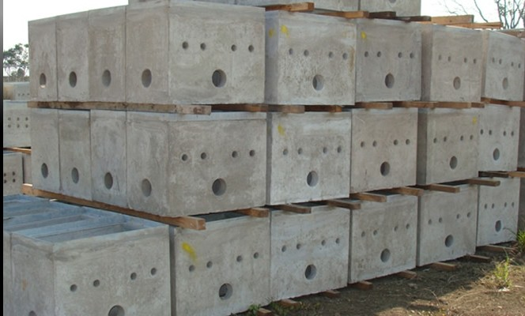
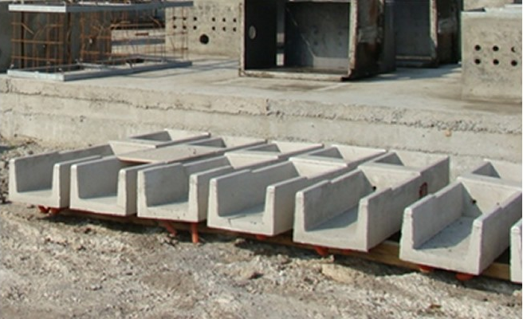
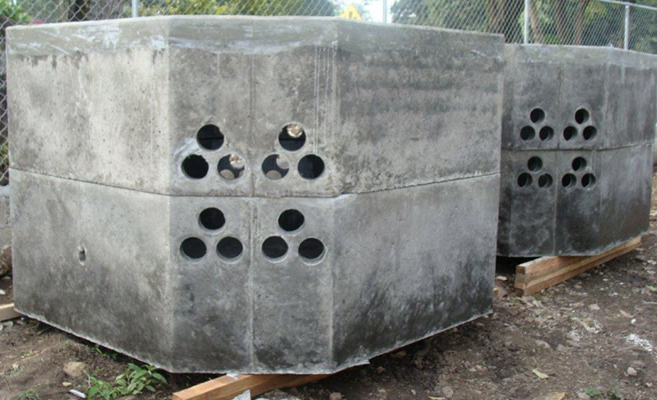

Nuestros Productos
Ofrecemos una amplia gama de productos eléctricos y de infraestructura de alta calidad

Postes de Concreto
Postes de concreto resistentes y duraderos, ideales para instalaciones de baja y media tensión cumpliendo normas CFE.
- Alta resistencia estructural
- Diferentes alturas y diseños
- Durabilidad ante condiciones climáticas extremas
- Cumple con normativas oficiales
.jpg)
Anclas Cónicas
Anclas cónicas de alta resistencia para la fijación segura de postes y estructuras metálicas.
- Fabricadas con acero de alta calidad
- Resistencia a la corrosión
- Fácil instalación
- Compatible con postes de concreto y metálicos

Registros de Alumbrado
Registros diseñados para instalaciones de alumbrado público, resistentes y duraderos bajo normativas oficiales.
- Alta resistencia mecánica
- Material duradero y seguro
- Variedad de tamaños disponibles
- Fácil mantenimiento e instalación
Registros de Baja y Media Tensión
Registros de concreto o polimérico para instalaciones eléctricas, asegurando durabilidad y seguridad.
- Resistencia a la compresión
- Diseño seguro y práctico
- Variedad de tamaños
- Cumple normativas CFE

Muretes Prefabricados
Muretes listos para instalar, fabricados con materiales resistentes y cumpliendo con estándares de calidad.
- Instalación rápida y sencilla
- Alta durabilidad
- Diferentes configuraciones
- Diseño seguro y eficiente

Pozos de Visita
Pozos de visita para instalaciones subterráneas, con estructura resistente y diseño seguro.
- Alta resistencia a la intemperie
- Variedad de tamaños
- Instalación sencilla
- Durabilidad garantizada

Tapas de Concreto Polimérico
Tapas resistentes y ligeras para registros y pozos de visita, fabricadas con materiales poliméricos de alta calidad.
- Resistentes y duraderas
- Fáciles de instalar y reemplazar
- Variedad de medidas
- Alta seguridad para instalaciones

Bases de Concreto para Postes
Bases de concreto resistentes para la instalación de postes, asegurando estabilidad y durabilidad.
- Alta resistencia estructural
- Diferentes dimensiones disponibles
- Instalación segura y práctica
- Material duradero y confiable